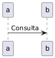

Consulta¶
Existem informações que são de extrema importãncia para o Suporte, saber montar uma pesquisa eficiente é fundamental para encontrar os menus corretos e módulos corretos, sabendo disso é possível ter mais agilidade e assertividade nas análises.
